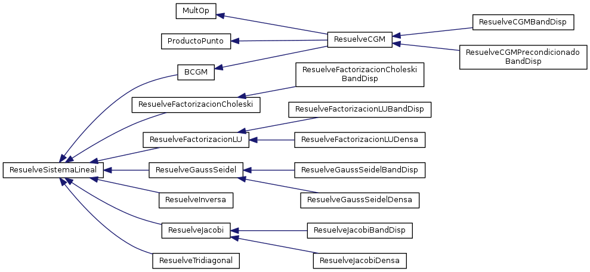

P√°gina principal
P√°ginas relacionadas
Clases
Archivos
Ejemplos
Lista de clases
Jerarquía de la clase
Miembros de las clases
Jerarquía de la clase
Ir a la jerarquía textual de la clase

Generado el S√°bado, 20 de Febrero de 2016 08:58:17 por
1.8.8
 1.8.8
1.8.8